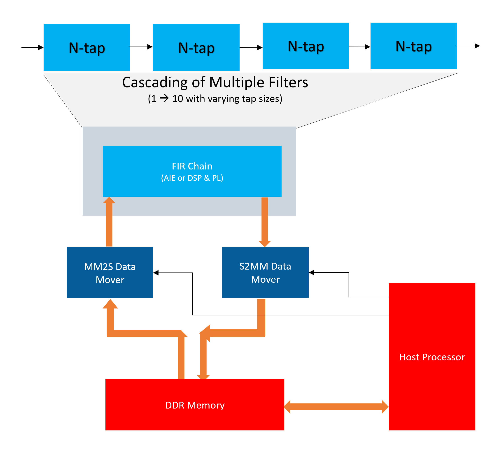
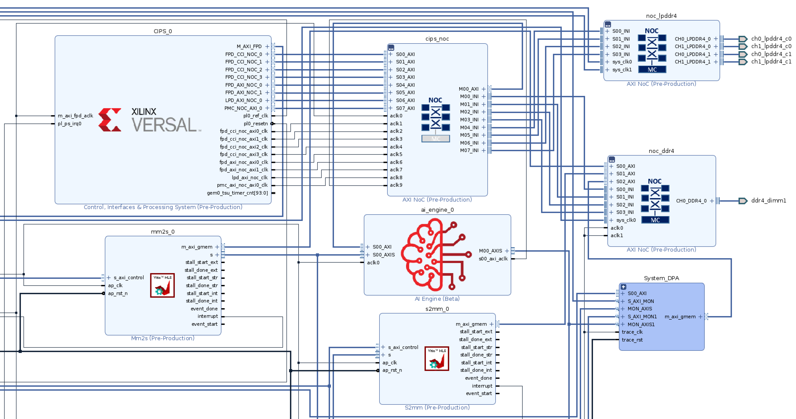
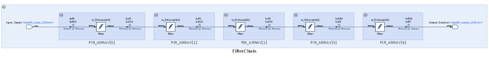

2021.1 Versal AI Engine/HLS FIR Filter Tutorial (AI Engine Implementation) |
Table of Contents¶
Building the Design¶
Design Build
Design Build¶
In this section, you will build and run the FIR filter design using the AI Engine implementation. You will compile the AI Engine design and integrate it into a larger system design (including the programmable logic (PL) kernels and processing system (PS) host application). You can review Integrating the Application Section in the AI Engine Documentation for the general flow.
At the end of this section, the design flow will generate a new directory (called build/). Underneath are sub-directories named fir_aie_$(N_FIR_FILTERS)firs_$(N_FIR_TAPS)taps (for example, fir_aie_1firs_15taps) depending on value of N_FIR_FILTERS and N_FIR_TAPS chosen in the build. Each sub-directory contains the Work/, hw_emu/, and hw/ subfolders. The Work/ subfolder is an output from the AI Engine compiler. The hw_emu/ subfolder contains the build for hardware emulation. The hw/ subfolder contains the build for the hardware run on a VCK190 board.
Make Steps
Make Steps¶
To run the following make steps (e.g. make kernels, make graph, etc), you must be in the Makefiles/ folder.
cd Makefiles
The following options can be specified in the make steps. See the make steps for instructions on how to apply them.
TARGET: It can be set to “hw” or “hw_emu” to build the design in hardware or hardware emulation flow. Default is “hw_emu”
N_FIR_FILTERS: Specifies the number of FIR filters in the chain. Default is 1.
N_FIR_TAPS: Specifies the number of FIR filter taps. Default is 15.
FIR_WINDOW_SIZE: Specifies the size of the ping-pong buffers inserted between the FIR filter kernels. Default is 256.
EN_TRACE: Flag to enable trace data to be captured. 0 is disabled and 1 is enabled. Default is 0.
Build the Entire Design with a Single Command
Build the Entire Design with a Single Command¶
If you are already familiar with the AI Engine and Vitis™ accelerated kernel compilation flows, you can build the entire design with one command:
make run (default hardware emulation, 1 filter 15 taps, no trace enabled)
or
make run TARGET=hw N_FIR_FILTERS=5 N_FIR_TAPS=15 EN_TRACE=1 (hardware, 5 FIR filters, each with 15 taps, enable tracing)
This command will run the make kernels,make graph,make xclbin,make application,make package and make run_emu for hardware emulation or to run on hardware (VCK190 board), depending on the TARGET you specify. The default TARGET without specification is hw_emu. The settings also apply to the following individual make steps.
Note: Simulation takes considerably longer to execute the application than when running on actual hardware, so it is recommended to simulate with a smaller data set to have it complete in a reasonable time. The hardware implementation uses a much larger data set to reduce measurement effects.
In the file \<project>/AIE/design/app_src/fir_aie_app.c, un-comment the following, as appropriate:
#define REPEAT_OFFSET 4096
#define REPETITIONS 509 <-- use this for TARGET=hw; will produce a 2M sample data set
//#define REPETITIONS 3 <-- use this for TARGET=hw_emu; will produce an 8K sample data set
#define FLUSH_SAMPLES 4096
Note
The generated files for a particular build are placed under individual directory: build/fir_aie_$(N_FIR_FILTERS)firs_$(N_FIR_TAPS)taps
See the specification in each of the following make steps for options used and location of input and output files.
The individual make steps to build the design with the options applied to them are specified as follows.
make kernels: Compile PL Kernels
make kernels: Compile PL Kernels¶
In this step, the Vitis compiler takes any kernels (RTL or HLS C) in the PL region of the target platform (xilinx_vck190_base_202110_1) and compiles them into their respective XO files.
The following command compiles the kernels (default TARGET=hw_emu, N_FIR_FILTERS=1, N_FIR_TAPS=15, FIR_WINDOW_SIZE=256, EN_TRACE=0):
make kernels
The expanded command is as follows:
mkdir -p ../build/fir_aie_$(N_FIR_FILTERS)firs_$(N_FIR_TAPS)taps/hw_emu
cd ../build/fir_aie_$(N_FIR_FILTERS)firs_$(N_FIR_TAPS)taps/hw_emu
v++ --target hw_emu \
--hls.clock 300000000:s2mm \
--platform xilinx_vck190_base_202110_1 \
--save-temps \
--temp_dir _x \
--verbose \
-g -c \
-k s2mm \
../../../design/pl_src/s2mm.cpp \
-o s2mm.hw_emu.xo
v++ --target hw_emu \
--hls.clock 300000000:mm2s \
--platform xilinx_vck190_base_202110_1 \
--save-temps \
--temp_dir _x \
--verbose \
-g -c \
-k mm2s \
../../../design/pl_src/mm2s.cpp \
-o mm2s.hw_emu.xo
Summary of the switches used:
|Switch|Description|
| — | — |
|–target | -t [hw|hw_emu]|Specifies the build target.|
|–hls.clock | Specifies a frequency in Hz at which the listed kernel(s) should be compiled by Vitis HLS. |
|–platform | -f|Specifies the name of a supported acceleration platform as specified by the $PLATFORM_REPO_PATHS environment variable or the full path to the platform XPFM file.|
|–save-temps | -s|Directs the Vitis compiler command to save intermediate files/directories created during the compilation and link process. Use the --temp_dir option to specify a location to write the intermediate files to.|
|–temp_dir --save-temps option is also specified.|
|–verbose|Display verbose/debug information.|
| -g | Generates code for debugging the kernel during software emulation. Using this option adds features to facilitate debugging the kernel as it is compiled. |
|–compile | -c|Required for compilation to generate XO files from kernel source files.|
|–kernel <arg>|-k <arg>|Compile only the specified kernel from the input file. Only one -k option is allowed per Vitis compiler command.|
|–output | -o|Specifies the name of the output file generated by the v++ command. The compilation process output name must end with the XO file suffix.|
Detailed Description of All Vitis Compiler Switches
| Input | Description |
|---|---|
| s2mm.cpp | The stream-to-memory-mapped data-mover PL kernel source code. |
| mm2s.cpp | The memory-mapped-to-stream data-mover PL kernel source code. |
| Output | Description |
|---|---|
| s2mm.hw_emu.xo | The stream-to-memory-mapped data-mover kernel object file. |
| mm2s.hw_emu.xo | The memory-mapped-to-stream data-mover kernel object file. |
make graph: Creating the AI Engine ADF Graph for Vitis Compiler Flow
make graph: Creating the AI Engine ADF Graph for Vitis Compiler Flow¶
An adaptive data flow (ADF) graph can be connected to an extensible Vitis platform (the graph I/Os can be connected either to platform ports or to ports on Vitis kernels through Vitis compiler connectivity directives.
The AI Engine ADF C++ graph of the design contains AI Engine kernels.
All interconnects between kernels are defined in the C++ graph
All interconnections to external I/O are fully specified in the C++ simulation testbench (
graph.cpp) that instantiates the C++ ADF graph object.
To compile the graph using the Makefile flow type (default TARGET=hw_emu, N_FIR_FILTERS=1, N_FIR_TAPS=15, FIR_WINDOW_SIZE=256, EN_TRACE=0):
make graph
The expanded command is as follows:
cd ../build/fir_aie_$(N_FIR_FILTERS)firs_$(N_FIR_TAPS)taps/hw_emu
aiecompiler -include=$(DSPLIB_ROOT)/L1/src/aie \
-include=$(DSPLIB_ROOT)/L1/include/aie \
-include=$(DSPLIB_ROOT)/L2/include/aie \
-include=../../../design/aie_src \
--platform=$(PLATFORM_REPO_PATHS)/xilinx_vck190_base_202110_1/xilinx_vck190_base_202110_1.xpfm \
--workdir=Work \
--log-level=5 \
--pl-freq=300 \
--verbose \
--dataflow \
../../../design/aie_src/fir_aie_graph.cpp
Summary of the switches used: |Switch|Description| | — | — | |–include=<string>|Specify compile-time include directory (zero or more).| |–platform=<string>|This is a path to a Vitis platform file that defines the hardware and software components available when doing a hardware design and its RTL co-simulation.| |–workdir=<string>|By default, the compiler writes all outputs to a sub-directory of the current directory, called Work. Use this option to specify a different output directory.| |–log-level=<int>|Log level for verbose logging (default=1).| |–pl-freq=<value>|Specifies the interface frequency (in MHz) for all PLIOs. The default frequency is a quarter of the AI Engine frequency and the maximum supported frequency is half of the AI Engine frequency. The PL frequency specific to each interface is provided in the graph.| |–verbose|Verbose output of the AI Engine compiler emits compiler messages at various stages of compilation. These debug and tracing logs provide useful messages regarding the compilation process.|
AI Engine Compiler Options AI Engine Programming Environment Documentation
| Inputs Sources | Description |
|---|---|
| fir_aie_graph.cpp | AIE kernel base FIR filter graph source code. |
| Output Objects | Description |
|---|---|
| libadf.a | Compiled AI Engine design graph |
| Work/ | Directory that contains all outputs of the AI Engine compiler. |
make xclbin: Use Vitis Tools to Link AI Engine and HLS Kernels with the Platform
make xclbin: Use Vitis Tools to Link AI Engine and HLS Kernels with the Platform¶
After the AI Engine graph and PL HLS kernels have been compiled, you can use the Vitis compiler to link them with the platform to generate an XCLBIN file.
The Vitis tools allow you to integrate the AI Engine graph and HLS kernels into an existing extensible platform. This is an automated step from a software developer perspective where the platform chosen is provided by the hardware designer (or you can opt to use one of the many extensible base platforms provided by Xilinx and the Vitis tools build the hardware design and integrate the AI Engine and PL kernels into the design).
To test this feature in this tutorial, use the base VCK190 platform to build the design.
The command to run this step is shown as follows (default TARGET=hw_emu, N_FIR_FILTERS=1, N_FIR_TAPS=15, FIR_WINDOW_SIZE=256, EN_TRACE=0):
make xclbin
The expanded command is as follows:
cd ../build/fir_aie_$(N_FIR_FILTERS)firs_$(N_FIR_TAPS)taps/hw_emu
v++ -l \
--platform xilinx_vck190_base_202110_1 \
--save-temps \
--temp_dir _x \
--verbose \
-g \
--clock.defaultTolerance 0.001 \
--clock.freqHz 300000000:mm2s_0 \
--clock.freqHz 300000000:s2mm_0 \
--config ../../../Makefiles/system.cfg \
-t hw_emu \
-o vck190_aie_fir.hw_emu.xclbin \
s2mm.hw_emu.xo \
mm2s.hw_emu.xo \
../libadf.a
If EN_TRACE is enabled, the following v++ flags are also set
--profile.trace_memory DDR \
--profile.data s2mm:s2mm_0:s \
--profile.data mm2s:mm2s_0:s \
--profile.data ai_engine_0.DataIn \
--profile.data ai_engine_0.DataOut
This will capture trace data for the ports specified.
Summary of the switches used:
| Switch | Description |
|---|---|
| --platform | -f | Specifies the name of a supported acceleration platform as specified by the $PLATFORM_REPO_PATHS environment variable or the full path to the platform XPFM file. |
| --save-temps | -s | Directs the v++ command to save intermediate files/directories created during the compilation and link process. Use the --temp_dir option to specify a location to write the intermediate files to. |
| --temp_dir |
This allows you to manage the location where the tool writes temporary files created during the build process. The temporary results are written by the Vitis compiler, and then removed, unless the --save-temps option is also specified. |
| --verbose | Display verbose/debug information. |
| -g | Generates code for debugging the kernel during software emulation. Using this option adds features to facilitate debugging the kernel as it is compiled. |
| --clock.freqHz \<freq_in_Hz>:\<cu>[.\<clk_pin>] | Specifies a clock frequency in Hz and assigns it to a list of associated compute units (CUs) and optionally specific clock pins on the CU. |
| --config |
Specifies a configuration file containing v++ switches. |
| --target | -t [hw|hw_emu] | Specifies the build target. |
| --output | -o | Specifies the name of the output file generated by the v++ command. The linking process output file name must end with the .xclbin suffix |
| --profile.data [ |
Enables monitoring of data ports through the monitor IPs. This option needs to be specified during linking. Detailed Profiling Options |
| --profile.trace_memory \<FIFO>:\<size>|\<MEMORY>[\<n>] | When building the hardware target (-t=hw), use this option to specify the type and amount of memory to use for capturing trace data. Detailed Profiling Options |
Detailed Description of All Vitis Compiler Switches Linking the Kernels in Vitis
| Inputs Sources | Description |
|---|---|
| s2mm.hw_emu.xo | The stream-to-memory-mapped data-mover kernel object file. |
| mm2s.hw_emu.xo | The memory-mapped-to-stream data-mover kernel object file. |
| libadf.a | Compiled AI Engine design graph |
| Output Objects | Description |
|---|---|
| vck190_aie_fir.hw_emu.xclbin | Compiled Platform Binary Container |
make application: Compile the Host Application
make application: Compile the Host Application¶
You can compile the host application by following the typical cross-compilation flow for the Cortex-A72. To build the application run the following command (default TARGET=hw_emu, N_FIR_FILTERS=1, N_FIR_TAPS=15, FIR_WINDOW_SIZE=256, EN_TRACE=0):
make application
The expanded command is as follows:
aarch64-linux-gnu-g++ -O \
-c -std=c++14 \
-D__linux__ \
-D__PS_ENABLE_AIE__ \
-DXAIE_DEBUG \
-I$(PLATFORM_REPO_PATHS)/sw/versal/xilinx-versal/sysroots/aarch64-xilinx-linux/usr/include/xrt \
-I$(XILINX_VITIS)/aietools/include/ \
-I$(PLATFORM_REPO_PATHS)/sw/versal/xilinx-versal/sysroots/aarch64-xilinx-linux/usr/include \
-I$(PLATFORM_REPO_PATHS)/sw/versal/xilinx-versal/sysroots/aarch64-xilinx-linux/usr/lib \
-I../../../design/aie_src \
-I../../../design/aie_src/inc \
-I../../../design/aie_src/src \
-I$(DSPLIB_ROOT)/L1/src/aie \
-I$(DSPLIB_ROOT)/L1/include/aie \
-I$(DSPLIB_ROOT)/L2/include/aie \
../../../build/fir_aie_$(N_FIR_FILTERS)firs_$(N_FIR_TAPS)taps/Work/ps/c_rts/aie_control_xrt.cpp \
-o ../app_control.o
aarch64-linux-gnu-g++ -O \
-c -std=c++14 \
-D__linux__ \
-D__PS_ENABLE_AIE__ \
-DXAIE_DEBUG \
-I$(PLATFORM_REPO_PATHS)/sw/versal/xilinx-versal/sysroots/aarch64-xilinx-linux/usr/include/xrt \
-I$(XILINX_VITIS)/aietools/include/ \ -I$(PLATFORM_REPO_PATHS)/sw/versal/xilinx-versal/sysroots/aarch64-xilinx-linux/usr/include \
-I$(PLATFORM_REPO_PATHS)/sw/versal/xilinx-versal/sysroots/aarch64-xilinx-linux/usr/lib \
-I../../../design/aie_src \
-I../../../design/aie_src/inc \
-I../../../design/aie_src/src \
-I../../../design/aie_src/xrt_inputs \
-I$(DSPLIB_ROOT)/L1/src/aie \
-I$(DSPLIB_ROOT)/L1/include/aie \
-I$(DSPLIB_ROOT)/L2/include/aie \
../../../design/app_src/fir_aie_app.cpp \
-o ../fir_aie_app.o \
--sysroot=$(PLATFORM_REPO_PATHS)/sw/versal/xilinx-versal/sysroots/aarch64-xilinx-linux \
-L$(PLATFORM_REPO_PATHS)/sw/versal/xilinx-versal/sysroots/aarch64-xilinx-linux/usr/lib \
-L$(XILINX_VITIS)/aietools/lib/aarch64.o \
-L$(XILINX_VITIS)/aietools/lib/lnx64.o \
-ladf_api_xrt \
-lxrt_coreutil
aarch64-linux-gnu-g++ ../app_control.o \
../fir_aie_app.o \
--sysroot=$(PLATFORM_REPO_PATHS)/sw/versal/xilinx-versal/sysroots/aarch64-xilinx-linux \
-L$(PLATFORM_REPO_PATHS)/sw/versal/xilinx-versal/sysroots/aarch64-xilinx-linux/usr/lib \
-L$(XILINX_VITIS)/aietools/lib/aarch64.o \
-L$(XILINX_VITIS)/aietools/lib/lnx64.o \
-ladf_api_xrt \
-lxrt_coreutil \
-o fir_aie_xrt.elf
Summary of the switches used:
|Switch|Description|
| — | — |
|-O | Optimize| Optimizing compilation takes somewhat more time, and a lot more memory for a large function. With -O, the compiler tries to reduce code size and execution time, without performing any optimizations that can take a great deal of compilation time.|
|-c |Compile or assemble the source files, but do not link.|
|-std=<\standard>|Set the language standard.|
|-D__linux__| |
|-DXAIE_DEBUG|Enable debug interface capabilities where certain core status, event status, or stack trace can be dumped out.|
|-D<Pre-processor Macro String>=<value>|Pass Pre-processor Macro definitions to the cross-compiler.|
|-I <dir>|Add the directory dir to the list of directories to be searched for header files.|
|-o <file>|Place output in file <file>. This applies regardless of the output being produced, whether it be an executable file, an object file, an assembler file or preprocessed C code.|
|–sysroot=<dir>|Use dir as the logical root directory for headers and libraries. For example, if the compiler would normally search for headers in /usr/include and libraries in /usr/lib, it will instead search dir/usr/include and dir/usr/lib. This is automatically set by the env_setup.sh script|
|-l<library>|Search the library named library when linking. The 2D-FFT tutorial requires adf_api_xrt and xrt_coreutil libraries.|
|-L <dir>|Add directory <dir> to the list of directories to be searched for -l.|
XRT Documentation Details of Host Application Programming
| Inputs Sources | Description |
|---|---|
| Work/ps/c_rts/aie_control_xrt.cpp | This is the AI Engine control code generated implementing the FIR Filter graph APIs. |
| fir_aie_app.cpp | Host processor application source code file that will run on an A72 processor. |
| Intermediate Objects | Description |
|---|---|
| app_control.o | Compiled AI Engine control code object. |
| fir_aie_app.o | Compiled host processor application object. |
| Output Objects | Description |
|---|---|
| fir_aie_xrt.elf | The executable that will run on an A72 processor. |
make package: Package the Design
make package: Package the Design¶
With the AI Engine outputs created, as well as the new platform, you can now generate the programmable device image (PDI) and a package to be used on an SD card. The PDI contains all executables, bitstreams, configurations of the device. The packaged SD card directory contains everything to boot Linux, the generated applications and .xclbin.
The command to run this step is as follows (default TARGET=hw_emu, N_FIR_FILTERS=1, N_FIR_TAPS=15, FIR_WINDOW_SIZE=256, EN_TRACE=0):
make package
or
cd ../build/fir_aie_$(N_FIR_FILTERS)firs_$(N_FIR_TAPS)taps/hw_emu
v++ -p \
-t hw_emu \
--save-temps \
--temp_dir ../build/fir_aie_$(N_FIR_FILTERS)firs_$(N_FIR_TAPS)taps/hw_emu/_x \
-f xilinx_vck190_base_202110_1 \
--package.sd_dir $(PLATFORM_REPO_PATHS)/sw/versal/xrt \
--package.rootfs $(PLATFORM_REPO_PATHS)/sw/versal/xilinx-versal/rootfs.ext4 \
--package.kernel_image $(PLATFORM_REPO_PATHS)/sw/versal/xilinx-versal/Image \
--package.boot_mode=sd \
--package.out_dir ../build/fir_aie_$(N_FIR_FILTERS)firs_$(N_FIR_TAPS)taps/hw_emu/package \
--package.image_format=ext4 \
--package.sd_file ../build/fir_aie_$(N_FIR_FILTERS)firs_$(N_FIR_TAPS)taps/hw_emu/fir_aie_xrt.elf \
../build/fir_aie_$(N_FIR_FILTERS)firs_$(N_FIR_TAPS)taps/hw_emu/vck190_aie_fir.hw_emu.xclbin \
../build/fir_aie_$(N_FIR_FILTERS)firs_$(N_FIR_TAPS)taps/libadf.a \
--package.defer_aie_run
If EN_TRACE is enabled, the following v++ flags are also set
--package.sd_file ./xrt.ini
This will include the XRT ini file which includes tracing parameters.
| Switch | Description |
|---|---|
| --package | -p | Packages the final product at the end of the Vitis compile and link build process. |
| --target | -t [hw|hw_emu] | Specifies the build target. |
| --save-temps | -s | Directs the v++ command to save intermediate files/directories created during the compilation and link process. Use the --temp_dir option to specify a location to write the intermediate files to. |
| --temp_dir |
This allows you to manage the location where the tool writes temporary files created during the build process. The temporary results are written by the Vitis compiler, and then removed, unless the --save-temps option is also specified. |
| --platform | -f | Specifies the name of a supported acceleration platform as specified by the $PLATFORM_REPO_PATHS environment variable or the full path to the platform XPFM file. |
| --package.sd_dir \<arg> | Where |
| --package.rootfs \<arg> | Where \<arg> specifies the absolute or relative path to a processed Linux root file system file. The platform RootFS file is available for download from xilinx.com. Refer to the Vitis Software Platform Installation for more information. |
| --package.kernel_image \<arg> | Where \<arg> specifies the absolute or relative path to a Linux kernel image file. Overrides the existing image available in the platform. The platform image file is available for download from xilinx.com. Refer to the Vitis Software Platform Installation for more information. |
| --package.boot_mode \<arg> | Where \<arg> specifies |
| --package.image_format | Where \<arg> specifies \<ext4|fat32> output image file format. ext4: Linux file system and fat32: Windows file system |
| --package.sd_file | Where \<arg> specifies an ELF or other data file to package into the sd_card directory/image. This option can be used repeatedly to specify multiple files to add to the sd_card. |
| --package.defer_aie_run | Load the AI Engine application with the ELF file, but wait to run it until graph run directs it. Required in PS based AI Engine flow. |
Detailed Desicription of All Vitis Compiler Switches Details of Packaging the System
| Inputs Sources | Description |
|---|---|
| $(PLATFORM_REPO_PATHS)/sw/versal/xrt | The PS Host Application needs the XRT headers in this folder to execute. |
| $(PLATFORM_REPO_PATHS)/sw/versal/xilinx-versal/rootfs.ext4 | The Root Filesystem file for Petalinux. |
| $(PLATFORM_REPO_PATHS)/sw/versal/xilinx-versal/Image | The pre-built Petalinux Image the processor boots from. |
| $(BUILD_TARGET_DIR)/fir_aie_xrt.elf | The PS Host Application executable created in the make application step. |
| $(BUILD_TARGET_DIR)/vck190_aie_fir.hw_emu.xclbin | The XCLBIN file created in the make xclbin step. |
| $(BUILD_TARGET_DIR)/libadf.a | The compiled AI Engine design graph created in the make graph step. |
The output of the v++ Package step is the package directory that contains the contents to run hardware emulation.
| Output Objects | Description |
|---|---|
| $(BUILD_TARGET_DIR)/package | The hardware emulation package that contains the boot file, hardware emulation launch script, the PLM and PMC boot files, the PMC and QEMU command argument specification files, and the Vivado® tools simulation folder. |
make run_emu: Run Hardware Emulation
make run_emu: Run Hardware Emulation¶
After packaging, everything is set to run emulation or hardware. To run emulation use the following command (default TARGET=hw_emu, N_FIR_FILTERS=1, N_FIR_TAPS=15, FIR_WINDOW_SIZE=256, EN_TRACE=0):
make run_emu
or
cd ../build/fir_aie_$(N_FIR_FILTERS)firs_$(N_FIR_TAPS)taps/hw_emu/package
./launch_hw_emu.sh
When launched, you will see the QEMU simulator load. Wait for the autoboot countdown to go to zero, and after a few minutes, you will see the root Linux prompt come up:
root@versal-rootfs-common-2021_1:~#
In some cases, the following error might come up on the screen:
root@versal-rootfs-common-2021_1:~# xinit: giving up
xinit: unable to connect to X server: Connection refused
xinit: server error
Enabling notebook extension jupyter-js-widgets/extension...
- Validating: OK
[C 13:46:09.233 NotebookApp] Bad config encountered during initialization:
[C 13:46:09.239 NotebookApp] No such notebook dir: ''/usr/share/example-notebooks''
The error can be ignored. Press
After the root prompt comes up, run the following commands to run the design:
mount /dev/mmcblk0p1 /mnt
cd /mnt
export XLC_EMULATION_MODE=hw_emu
export XILINX_XRT=/usr
./fir_aie_xrt.elf a.xclbin
The fir_aie_xrt.elf should execute, and after a few minutes, you should see the output with TEST PASSED on the console. When this is shown, run the following keyboard command to exit the QEMU instance:
#To exit QEMU Simulation
Press Ctrl-A, let go of the keyboard, and then press x
To run with waveform do the following:
cd ../build/fir_aie_$(N_FIR_FILTERS)firs_$(N_FIR_TAPS)taps/hw_emu/package
./launch_hw_emu.sh -graphic -xsim
The XSIM Waveform Viewer is launched. Drag and drop the signals into the Viewer and click Play to start the emulation. Go back to the terminal and wait for the Linux prompt to show up.
In the XSIM Waveform Viewer, you will see the signals you added to the waveform adjusting over the execution of the design. Once done, hit the pause button and close the window to end the emulation.
TARGET=hw: Run on Hardware
Run on Hardware¶
To run the design in hardware, re-run the following “make” steps with TARGET=hw and other applicable options (see the previously listed make steps)
make kernels TARGET=hw
make graph TARGET=hw
make xclbin TARGET=hw
make application TARGET=hw
make package TARGET=hw
this can also be done is a single step as follows:
make build TARGET=hw
These commands create a build/fir_aie_$(N_FIR_FILTERS)firs_$(N_FIR_TAPS)taps/hw folder with the kernels, xclbin, and package for a hardware run.
Running the following command will copy the boot image (fir_aie_$(N_FIR_FILTERS)firs_$(N_FIR_TAPS)taps/hw/package/sd_card.img) to the run_dir folder (run_dir/fir_aie_$(N_FIR_FILTERS)firs_$(N_FIR_TAPS)taps):
make run_emu TARGET=hw
Now follow Steps 1-9 to run the lenet_xrt.elf executable on your VCK190 board.
Step 1. Ensure your board is powered OFF.
Step 2. Use an SD card writer (such as balenaEtcher) to flash the sd_card.img file onto an SD card.
Step 3. Plug the flashed SD card into the top slot of the VCK190 board.
Step 4. Set the switch SW1 Mode[3:0]=1110 = OFF OFF OFF ON.
Step 5. Connect your computer to the VCK190 board using the included USB cable.
Step 6. Open a TeraTerm terminal and select the correct COM port. Set the port settings to the following:
Port: <COMMXX>
Speed: 115200
Data: 8 bit
Parity: none
Stop Bits: 1 bit
Flow control: none
Transmit delay: 0 msec/char 0 msec/line
Step 7. Power ON the board.
Step 8. Wait until you see the root@versal-rootfs-common-2021_1 Linux command prompt. Press enter a few times to get past any xinit errors.
Step 9. Run the following commands into the TeraTerm terminal:
cd /mnt/sd-mmcblk0p1
export XILINX_XRT=/usr
./init.sh
./fir_aie_xrt.elf a.xclbin
After execution completes and the testcase passes data integrity check, ‘TEST PASSED’ should appear on the terminal.
Hardware Design Details¶
FIR Filter AI Engine Implementation architecture and AI Engine/PL Function Partitioning
FIR Filter AI Engine Implementation Architecture and AI Engine/PL Function Partitioning¶
The following figure shows a high level block diagram of the design. The test harness consists of the compute kernels, data mover kernels and DDR to store input and output vectors. This setup is maintained in the two implementations (using AI Engine in this section of the tutorial and HLS & DSPs in the other). In this setup, the interface between the data mover kernels and DDR is memory mapped AXI4 and it is AXI4-stream between data mover kernel and AI Engine kernel. The mm2s kernel moves data from the DDR memory into the FIR Filter and the s2mm kernel moves the data from FIR filter back to DDR memory. The data widths of both the kernels are 128 bits wide, and they run at 300 MHz, providing a transfer rate of up to 1.2 Gsamples/sec.

Design Details
Design Details¶
The design in this tutorial starts with a base platform containing the control interface and processing system (CIPS), NoC, and AI Engine and the interfaces among them. The v++ linker step builds on top of the base platform by adding the AI Engine graphs and PL kernels. To add the various functions in a system level design, PL kernels are added to the base platform depending on the application, that is, the PL kernels present in each design may vary. An ADF graph is connected to an extensible Vitis platform where the graph I/Os are connected either to the platform ports or to ports on Vitis kernels through the Vitis compiler connectivity directives. In the design, the components are added by v++ -l step (make XCLBIN in the tool flow section above) and include the following:
FIR Filter AI Engine Graph (
libadf.a)data mover kernel (
mm2s.[hw|hw_emu].xoands2mm.[hw|hw_emu].xo)connections interfaces defined in system configuration file (system.cfg)
To see a schematic view of the design with the extended platform as shown in the following figure, open in Vivado tools.
build/fir_aie_$(N_FIR_FILTERS)firs_$(N_FIR_TAPS)taps/[hw|hw_emu]/_x/link/vivado/vpl/prj/prj.xpr

The actual FIR filter chain itself is implemented in the AI Engine domain. The graph connects together in a chain the specified number of filters. For purposes of simplicity in benchmarking, all the filters in the chain are identical, though it is unlikely such a chain would be used in a practical application.
Notice the system debugging and profiling IP (DPA) is added to the PL region of the device to capture AI Engine run-time trace data if the EN_TRACE option is enabled in the design. The mm2s/s2mm kernels and the AI Engine Array Interface are both operating at 300 MHz.
AI Engine and PL Kernels
AI Engine and PL Kernels¶
The top level AI Engine graph fir_aie_graph.h instantiates the symmetric FIR filter from the AI Engine DSP library, (DSPLib), and uses a for loop to connect them all together in a chain. The file fir_aie_graph.cpp instantiates the filter chain, and connects it to the AI Engine’s 128-bit PLIO interfaces.
The PL-based data movers consist of MM2S and S2MM kernels. The MM2S move data from DDR memory through the NoC to the AI Engine array and the final FIR output from the AI Engine array is moved back to DDR memory through the NoC by the S2MM kernel. In either data mover kernel, the side facing NoC uses a memory mapped AXI4 interface (MM-AXI4) and the side facing the AI Engine array uses an AXI4-Stream interface. Some additional details regarding the data mover kernels include:
MM2S
The data width is 128 bits
To avoid bandwidth limitation resulting in back pressure which causes performance degradation, the HLS pragma
max_read_burst_lengthis set higher than the default to 256 bits.
S2MM
The data width is 128 bits
To avoid bandwidth limitation resulting in back pressure which causes performance degradation, the HLS pragma
max_write_burst_lengthis set higher than the default to 256 bits.
Software Design Details¶
The software design in the FIR Filter AI Engine implementation consists of the following sections:
AI Engine Kernels and Graph Representation
AI Engine Kernels and Graph Representation¶
DSPLib FIR filter kernels are C/C++ programs written using specialized intrinsic calls that target the VLIW vector processor. The AI Engine compiler compiles the kernel code to produce an executable ELF file for each of the AI Engines being used in the design. Review AI Engine Kernel Programming Section in the AI Engine Documentation for a high-level overview of kernel programming. These DSPLib kernels can be stitched together to function as AI Engine graphs written in C++. In this design, the AI Engine compiler writes a summary of compilation results to build/fir_aie_$(N_FIR_FILTERS)firs_$(N_FIR_TAPS)taps/Work/fir_aie_graph.aiecompile_summary. You can view the graph by running the following command:
vitis_analyzer build/fir_aie_$(N_FIR_FILTERS)firs_$(N_FIR_TAPS)taps/Work/fir_aie_graph.aiecompile_summary
The following figures show the graph representation of the AI Engine kernels (N_FIR_FILTERS=5, N_FIR_TAPS=64).

Data Flow Graph
Data Flow Graph¶
This section describes the overall data-flow graph specification of the FIR filter design using AI Engine which is compiled by the AI Engine compiler. Refer to AI Engine Programming Section in the AI Engine Documentation for information on ADF graphs.
The overall graph definition of the design is contained in the fir_aiegraph.cpp file. The top level graph in turns contains the subgraph, fir_aie_graph.h, which is described in the following subsection.
Define the Graph Class¶
Define the FIR graph class by using the objects defined in the appropriate name space. It must include the ADF library. To access ADF library elements, the following declaration is used to scope into it:
using namespace adf;
In addition the following namespace is declared to access the DSPLib library:
namespace dsplib = xf::dsp::aie
All user graphs are defined from the class graph, for example:
class FirGraph : public graph
Declare the top level ports to the subgraph:
port<input> in;
port<output> out;
Instantiate DSPLib FIR Filters¶
The DSPLib symmetric FIR Filter kernels are created using the following array declaration. The pre-processor #if statement is used as a workaround here because in C++ each array element requires its own template parameters, even if they are identical:
FirGraph(): FIR_ARRAY {
dsplib::fir::sr_sym::fir_sr_sym_graph<T_DATA, T_COEF, N_FIR_TAPS, FIR_DOWNSHIFT, FIR_ROUND_MODE, FIR_WINDOW_SIZE, N_AIES_PER_FIR> (FIR_TAP_COEFS)
#if (N_FIR_FILTERS >= 2)
, dsplib::fir::sr_sym::fir_sr_sym_graph<T_DATA, T_COEF, N_FIR_TAPS, FIR_DOWNSHIFT, FIR_ROUND_MODE, FIR_WINDOW_SIZE, N_AIES_PER_FIR> (FIR_TAP_COEFS)
#endif
#if (N_FIR_FILTERS >= 3)
, dsplib::fir::sr_sym::fir_sr_sym_graph<T_DATA, T_COEF, N_FIR_TAPS, FIR_DOWNSHIFT, FIR_ROUND_MODE, FIR_WINDOW_SIZE, N_AIES_PER_FIR> (FIR_TAP_COEFS)
#endif
<... etc>
Add Connectivity Information¶
This is done by using the templated connect<> object. For our cascaded chain, the first FIR filter must have its input connected to the subgraph input in, and the last FIR filter must have its output connected to the subgraph output out. If there is more than one FIR filter, their inputs and outputs must be daisy chained together:
connect<>(in, FIR_ARRAY[0].in);
if (N_FIR_FILTERS > 1) {
for (ix = 1; ix < N_FIR_FILTERS; ix++) {
connect<>(FIR_ARRAY[ix-1].out, FIR_ARRAY[ix].in);
}
}
connect<>(FIR_ARRAY[N_FIR_FILTERS-1].out, out);
Top Level Application¶
Define a top-level application file (fir_aie_graph.cpp in this design) specifies the top level port connectivity (the PLIO objects, which also have file names provided for simulation purposes). It then creates a platform object, connecting up the PLIO objects to it. It also creates an instance of the FirGraph graph, and connects the FilterChain to the platform’s IOs
that contains an instance of the graph class and connects the graph to a simulation platform to provide file input and output:
PLIO *pldata_in = new PLIO("DataIn", plio_128_bits,"data/fir_input_128b.txt");
PLIO *pldata_out = new PLIO("DataOut", plio_128_bits,"data/fir_output_128b.txt");
simulation::platform<1,1> platform(pldata_in, pldata_out);
FirGraph FilterChain;
connect<> net0(platform.src[0], FilterChain.in);
connect<> net1(FilterChain.out, platform.sink[0]);
Simulator Control¶
For this graph to be simulated using the AI Engine simulator, or the x86 functional simulator, the main function is defined, which calls methods to initialize the FilterChain, runs it the specified number of iterations, and then performs cleanup:
#if defined(__AIESIM__) || defined(__NEW_X86Sim__)
int main(void) {
FilterChain.init() ;
FilterChain.run(N_ITERATIONS);
FilterChain.end() ;
return 0 ;
}
#endif
Refer to the AI Engine Documentation for details.
Note that for running on hardware (hw) or hardware emulation (hw_emu), the main() function is not required. In this case, it is only necessary to create an instance of the platform and graph, and the PS Host application code will control it via XRT calls. (See PS Host Application in the following section)
PL Kernels
PL Kernels¶
In addition to the kernels operating in the AI Engine array, this design specifies kernels to run in the PL region of the device (written in HLS C++). The software design of the data mover kernels are described below:
mm2s (mm2s.cpp)¶
The mm2s kernel reads data from a Memory Mapped AXI4 (MM-AXI4) interface and writes it to an AXI4-Stream Interface
Arguments¶
The mm2s kernel takes the following arguments:
ap_int<N>is an arbitrary precision integer data type defined inap_int.hwhereNis a bit-size from 1-1024. In this design, the bit-size is set to 128.hls::stream<qdma_axis<D,0,0,0>>is a data type defined inap_axi_sdata.h. It is a special data class used for data transfer when using a streaming platform. The parameter<D>is the data width of the streaming interface which is set to 128. The remaining three parameters should be set to 0.
The mm2s kernel also specifies the following pragmas to help optimize the kernel code and adhere to interface protocols:
pragma HLS INTERFACE s_axilite¶
The mm2s kernels has one s_axilite interface (specifying a AXI4-Lite slave I/O protocol) with bundle=control associated with all the arguments (mem,s, and size). This interface is also associated with return.
pragma HLS INTERFACE m_axi¶
The mm2s kernel has one m_axi interface (specifying a AXI4 master I/O protocol) with offset=slave bundle=gmem. This interface also has max_read_burst_length=256. Part of this AXI4 interface is the Read Address Channel containing the signals ARBURST and ARLEN. This interface has a burst type ARBURST=INCR and can support burst length ARLEN of 1-256 read transfers. In an incrementing burst, the address for each transfer in the burst is an increment of the previous transfer address. The max_read_burst_length=256 sets the burst length ARLEN=256 transfers, meaning that in every transaction (burst), there are 256 transfers of data. The address of each transfer with a size of 16 bytes (128-bits from the mem argument) is the previous address plus 16.
pragma HLS INTERFACE axis¶
The mm2s kernel has one axis interface (specifying a AXI4-Stream I/O protocol)
pragma HLS PIPELINE II=1¶
The mm2s kernel has a for loop that is a candidate for burst read because the memory addresses per loop iteration is consecutive (ARBURST=INCR). To pipeline this for loop, you can use this pragma by setting the initiation interval (II) = 1.
s2mm (s2mm.cpp)¶
The s2mm kernel reads 128 bits of data from an AXI4-Stream interface and writes it to an AXI Memory mapped interface.
Arguments¶
The s2mm kernel takes the following arguments:
ap_int<N>is an arbitrary precision integer data type defined inap_int.hwhereNis a bit-size from 1-1024. For thememargument, the bit-size is set to 128.hls::stream<qdma_axis<D,0,0,0>>is a data type defined inap_axi_sdata.h. It is a special data class used for data transfer when using a streaming platform. The parameter<D>is the data width of the streaming interface and is set to 128 (same as thememargument). The remaining three parameters should be set to 0.
The s2mm kernel also specifies the following pragmas to help optimize the kernel code and adhere to interface protocols:
pragma HLS INTERFACE s_axilite¶
The s2mm kernel has one s_axilite interface (specifying a AXI4-Lite slave I/O protocol) with bundle=control associated with all the arguments (mem,s, and size). This interface is also associated with return.
pragma HLS INTERFACE m_axi¶
The s2mm kernel has one m_axi interface (specifying an AXI4 master I/O protocol) with offset=slave bundle=gmem. This interface also has max_write_burst_length=256. Part of this AXI4 interface is the Write Address channel containing the signals AWBURST and AWLEN. This interface has a burst type AWBURST=INCR and can support burst length AWLEN of 1-256 read transfers. In an incrementing burst, the address for each transfer in the burst is an increment of the previous transfer address. The max_write_burst_length=256 sets the burst length AWLEN=256 transfers, meaning that in every transaction (burst), there are 256 transfers of data. The address of each transfer with a size of 16 bytes (128-bits from the mem argument) is the previous address plus 16.
pragma HLS INTERFACE axis¶
The s2mm kernel has one axis interface (specifying an AXI4-Stream I/O protocol)
pragma HLS PIPELINE II=1¶
The s2mm kernel has a for loop that is a candidate for burst write because the memory addresses (mem[i]) are contiguous (memory accesses across loop iterations are consecutive). To pipeline this for loop, you can use this pragma by setting the initiation interval (II) = 1.
PS Host Application
PS Host Application¶
The FIR filter AI Engine tutorial uses the embedded PS as an external controller to control the AI Engine graph and data mover PL kernels. Review Programming the PS Host Application Section in the AI Engine Documentation to understand the process to create a host application.
In addition to the PS host application (design/app_src/fir_aie_app.cpp), the AI Engine control code must also be compiled. This control code (aie_control_xrt.cpp) is generated by the AI Engine compiler when compiling the AI Engine design graph and kernel code.
The AI Engine control code is used by the PS host application for the following reasons:
Control the initial loading of the AI Engine kernels
Run the graph for several iterations, exit, and reset the AI Engine tiles.
Within the PS host application, three classes are defined (two for the PL kernels (mm2s and s2mm) and one for the FilterChain graph), which defines methods used to control and monitor the corresponding kernels.
The main sections of the PS host application code is described in the following subsections:
Include graph.cpp¶
Include the fir_aie_graph.cpp AI Engine application file. This file contains the instantiation of the AI Engine FIR FilterChain data flow graph object, and is required so the application code understands the structure of the graph.
#include fir_aie_graph.cpp
Define Input and Output Files¶
A single data file is provides data to stimulate the filter chain. However, the output data will depend on the value of the makefile parameters N_FIR_FILTERS and N_FIR_TAPS. Data files have been generated for the four corner cases (1 FILTERS / 15 TAPS, 10 FILTERS / 15 TAPS, 1 FILTERS / 240 TAPS, 10 FILTERS / 240 TAPS). For other configurations, the data is not checked.
#include "input_data.h"
#if (N_FIR_FILTERS == 1) && (N_FIR_TAPS == 15)
#include "golden_data_1f_15t.h"
#elif (N_FIR_FILTERS == 10) && (N_FIR_TAPS == 15)
#include "golden_data_10f_15t.h"
#elif (N_FIR_FILTERS == 1) && (N_FIR_TAPS == 240)
#include "golden_data_1f_240t.h"
#elif (N_FIR_FILTERS == 10) && (N_FIR_TAPS == 240)
#include "golden_data_10f_240t.h"
#else
#include "golden_data_1f_15t.h"
#endif
Define Data Sizes¶
To enable comparing of the 2 implementations of this design, i.e. AIE and HLS implementation, it is desirable to have a small data set to be able to run it through simulation, and a large data set to run through hardware to minimize the effects of measurement errors on determining the performance metrics. This has been done by providing a small 8k sample of input data (I and Q samples) in which the data repeats twice. The application code then copies the data into potentially much larger buffer, using REPEAT_OFFSET to determine where the data begins to repeat itself, and REPETITIONS to copy from this point forward to the end of the buffer the specified number of times. Having two cycles of data and a fixed offset (REPEAT_OFFSET) is necessary to allow the filter’s start-up transient to settle out and reach a steady state for subsequent cycles. Likewise, FLUSH_SAMPLES specifies the number of zero samples to add to the end of the buffer to clear out the FIR filter, so the application can be run multiple times.
#define SAMPLES_PER_WORD 4
#define REPEAT_OFFSET 4096
#define REPETITIONS 509
//#define REPETITIONS 3
#define FLUSH_SAMPLES 4096
load_xclbin Function¶
This function is responsible for loading the XCLBIN file into the device.
mm2s Class¶
This class provides the following methods for controlling/monitoring this kernel:
init(): allocates the input data buffer object (BO), opens the kernel, and sets the kernel parameters (location of the buffer object, and its length).
run(): starts execution of the mm2s kernel
run_wait(): waits for the mm2s kernel to finish
close(): closes the input data buffer object and kernel
load(): loads data from the input file into the data buffer, using REPEAT_OFFSET, REPETITIONS and FLUSH_SAMPLES to potentially generate a much larger data set than the input file (see #define-data-sizes).
s2mm Class¶
This class provides the following methods for controlling / monitoring this kernel:
init(): allocates the output data buffer object (BO), opens the kernel, and sets the kernel parameters (location of the buffer object, and its length).
run(): starts execution the s2mm kernel
run_wait(): waits for the s2mm kernel to finish Note: This call will only return once it receives the number of samples specified computed in the init function. If the application code hangs at this point, it is waiting from data from the Filter Chain.
close(): closes the output data buffer object and kernel
golden_check(): Compare data in the output data buffer object with the data from the output file, using REPEAT_OFFSET and REPETITIONS to compare the data correctly(see #define-data-sizes).
FIR Chain Class¶
This class provides the following methods for controlling the graph:
init(): opens the AI Engine FIR chain graph
run(): resets and starts execution the AI Engine FIR chain graph
close(): closes the graph
Main Function¶
This is the main PS application code that controls the kernels and runs data through the design. The various steps this code goes through is described in the following subsections.
1. Check Command Line Argument¶
The beginning of the A72 application is represented by the main function. It takes in one command line argument: an XCLBIN file.
2. Open XCLBIN¶
The A72 application loads the XCLBIN binary file and creates the data mover kernels to be executed on the device.
3. Create and Initialize Data Mover Kernels and FIR Chain Graph¶
Create the kernel objects, initialize them, and load the input data from the constant array into the input buffer.
4. Run the Data Mover Kernels and FIR Chain Graph¶
Start execution of the FIR Filter Graph and the mm2s/s2mm kernels.
5. Wait for Data Mover Kernels to Complete¶
Wait for the mm2s and s2mm kernels to complete.
6. Verify Output Results¶
Compare data in output buffer object with the reference golden data.
7. Release Allocated Resources¶
Close the mm2s/s2mm kernels and FIR chain graph.
References¶
The following documents provide supplemental information for this tutorial.
AI Engine Documentation¶
Contains sections on how to develop AI Engine graphs, how to use the AI Engine compiler, and AI Engine simulation, and performance analysis.
Revision History¶
Jul 2021 - Initial Release
Support¶
GitHub issues will be used for tracking requests and bugs. For questions go to forums.xilinx.com.
License¶
Licensed under the Apache License, Version 2.0 (the “License”); you may not use this file except in compliance with the License.
You may obtain a copy of the License at http://www.apache.org/licenses/LICENSE-2.0
Unless required by applicable law or agreed to in writing, software distributed under the License is distributed on an “AS IS” BASIS, WITHOUT WARRANTIES OR CONDITIONS OF ANY KIND, either express or implied. See the License for the specific language governing permissions and limitations under the License.
XD061 | © Copyright 2021 Xilinx, Inc.